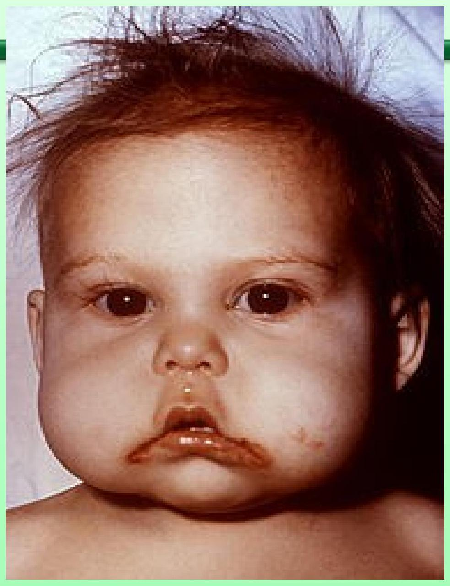
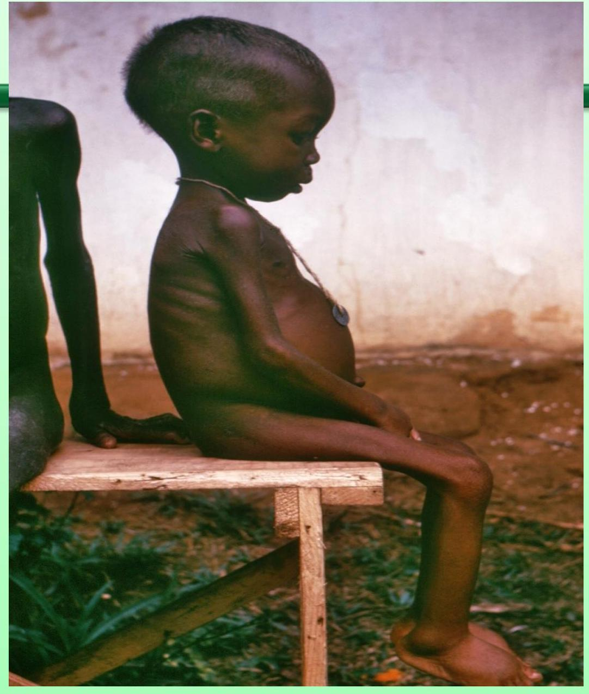

Unit 3: Nutrition
Objectives
- Classify deficiency disorders
- Outline causes, features, and management of deficiency disorders.
Beriberi
Predisposing factors:-
- People who eat refined starchy foods
- Taking high doses of diuretics
- Abuse of alcohol
There are two types of Beriberi:-
- Wet
- Dry.
Dry Beriberi
Features
- Severe weakness of the legs
- Anorexia
- Paralysis of the arms and the legs
- Mental confusion and speech difficulties
- Pain of the affected muscles
- Strange eye movements (Nystagmus)
- Tingling sensation, vomiting
Wet Beriberi
Features
- Awakening at night with shortness of breath.
- Increased heart rate
- Shortness of breath with activity
- Swelling of the lower limbs
Investigations
A physical exam. May show signs of congestive heart failure.
- Difficult breathing with distended neck veins
- Enlarged heart
- Fluid in the lungs
- Swelling of the lower limbs
- Rapid heart rate
Beriberi cont...
- A person with late stage beriberi may be confused or have memory loss and delusions.
- The patient may be less able to sense vibrations.
A neurological exam may show signs of;
- Changes in the walk
- Co-ordination problems
- Decreased reflexes an drooping of the eyelids.
- Blood tests are done to measure the amount of Thiamine in the blood.
- Urine tests to see if Thiamine is passing through the urine
Treatment
- Replace Thiamine orally or by injection
- Give other vit., they may be deficient.
- Blood tests are done to assess the outcome of the treatment
- When treated early the condition is reversible
Prevention
- Eating foods rich in Thiamine e.g. Whole grain cereals especially breastfeeding mothers.
- Cut down or quit alcohol it interferes with absorption of vit B1
- Giving fortified foods e.g. enriched cereals
- Giving Thiamine supplements.
Complications
- Coma
- Congestive heart failure
- Psychosis
- Death
Pellagra
- It is a condition caused by lack of Vit. B3 (Niacin) in the diet.
- It is common to people who eat mostly maize and generally a poor diet.
Clinical Features
- High sensitivity to sunlight(Photophobia)
- Aggression
- Dermatitis, alopecia, oedema
- Smooth, beefy red glossitis,Tongue becomes thick
- Red skin lesions
- Insomnia
- Body weakness
Pellagra cont...
- Mental confusion
- Ataxia, paralysis of extremities, peripheral neuritis
- Diarrhoea
- Enlargement of the heart. Dementia
- Abdominal pain and bloating
- Variations in level of consciousness with involuntary sucking and grasping motions(Enchephalopathic syndrome)
- Psycho sensory disturbances i.e. Annoying bright lights, odours intolerance causing nausea and vomiting, diziness after sudden movements
- Psychomotor disturbances(restlessness, tense and desire to quarrel, increased preparedness for motor action)
- Emotional disturbances .
Causes
- Lack of Niacin
- Deficiency of Tryptophan (Amino acid )found in animal proteins which the body converts into Niacin
- Diseases which interfere with absorption of Niacin e.g. Diarrhea, alcoholism, cirrhosis of the liver.
- Long term use of antituberculous drugs e.g. Isoniazid
Treatment
- Supplement the diet with niacinamide by mouth or by injection-dosage $300-500 \mathrm{mg}$ od po, or inj100-250mg bd-tds
- In case of encephalopathic syndrome dosage is 1 gm po or $100-250 \mathrm{mg}$ by inj.
- Give other B complex vitamins
Prevention
- Give foods rich in Niacine.g. Meat
- liver whole grains.
Rickets
- It is softening of the bones in children leading to fractures and deformity
Clients at risk
- Breastfed babies whose mothers are not exposed to sunlight
- Breastfed babies who are not exposed to sunlight
- Individuals who do not consume milklactose intolerant
Rickets cont...
- If a mother has low vit D levels during pregnancy, the infant may have congenital rickets
Vit D is required for calcium absorption from the gut. Deficiency of VitD causes hypocalcaemia leading to skeletal and dental deformities
Signs in babies
- Bones of the skull may be soft
- The fontanelles take a long time to close
- Swelling of the bones in wrists and ankles
- Chest may be deformed, swelling at the ends of the ribs
- The baby may have repeated respiratory infections
- Muscle weakness-the baby cannot support his legs to stand when supported, he is floppy. There is increased tendency to greenstick fractures
THE KAREN HOSPITAL
Signs in children
- The skull may look enlarged and square shaped
- The child may learn to walk late
- Toddlers may get bowed legs
- Older children may get knock knees
- Adolescents may complain of pain in the back and legs
- Severe rickets in girls can cause pelvic deformities which can result in difficult childbirth
Osteomalacia
- Occurs in women with Vit D deficiency
- The body cannot absorb enough calcium from the food, it uses calcium from the bones
- The bones become soft and break easily
Symptoms
- Severe pain in the bones
- Muscle weakness
- Deformity of the pelvis leading to difficulties in childbirth
- Broken bones in people who are old and disabled
Diagnosis
- Serum calcium and phosphorus may show low levels
- X-ray of the affected bones may show loss of calcium from the bones or changes in the structure of the bones
Treatment
- Increase dietary intake of Vit D and phosphorus
- Expose to ultraviolet B lights
- Give fish oils and Alphacalcidol (Vit D3); Adults and children over 20 kg _1mcgm od, maintenance dose0.251 mcgm od.
- Adjust the dose according to serum calcium levels to prevent hypocalcaemia
- (A lot of Ca may go to the cell depleting the serum of calcium)
- Neonates and preterm babies 50-100 nanogm/kg per day. Children under $20 \mathrm{kg}-50 \mathrm{ng} / \mathrm{kg} /$ day
Prevention
400IU of Vit D for infants and children. Dietary supplementation with Vit D3 for cases at risk;
- Adults age 50-200IUod,
- $50-70 \mathrm{yrs}-400 \mathrm{IU}$ od
- Over 70yrs-600IUper od
Calcium supplements should be given as follows;
- $1-3 \mathrm{yrs}-500 \mathrm{mg}$
- $4-8 \mathrm{yrs}-800 \mathrm{mg}$
- $9-18 \mathrm{yrs}-1300 \mathrm{mg}$
- $19-50 \mathrm{yrs}-1000 \mathrm{mg}$, over $50 \mathrm{yrs}-1200 \mathrm{mg}$ od
Complications of Rickets
- Delays child's motor skills development
- Failure to grow and develop normally
- Skeletal deformities
- Chronic growth problems which can result in short stature
- Seizures due to hypoglycaemia
- Dental defects
Scurvy
- It is caused by severe Vit C deficiency
- It is common to people who have no access to fresh foods
- It is due to inadequate production of collagen, an extracellular substance that binds the cells of the teeth and bones and blood capillaries
- It is essential for wound healing
- Destruction of Vit C in foods by overexposure to air or by overcooking, excessive ingestion of Vit C in pregnancy which requires the newborn to acquire large amounts of Vit C at birth
People at risk of Scurvy
- Alcoholics
- Refugees who cannot access fresh fruits and vegetables
- People who live in drought stricken areas where fruits and vegetables are not available
- Urban people who cannot access fresh fruits and vegetables.
- Old people and unmarried men who live alone and do not eat enough fresh foods. Pregnant and lactating women, sailors who are deprived of vit C for a long time
Clinical Features
- Tiredness
- Weakness
- Irritability and depression
- Aches and pains
- Poor healing
Bleeding symptoms;
- Weak capillaries Bruising easily
Features cont...
- Bleeding from old scars
- Internal bleeding
Dental symptoms;
- Swollen, purple and spongy gums Loose teeth
Limb and joint pains especially the knees
- Children can have fever, diarrhoea vomiting tender and painful swellings on the legs
Diagnosis
Confirming diagnosis;
- Serum Ascorbic Acid levels less than $30 \mathrm{mg} / \mathrm{dl}$
- Dietary history revealing inadequate intake of Vit C
- Capillary fragility test with a BP cuff;
- It is positive if more than 10 petechiae form after 5 minutes of pressure
Treatment
- Restore Vit C;
- $100-200 \mathrm{mg}$ of Vit C in mild cases
- 500 mg of Vit C/day in severe form
- Symptoms subside in 2-3 days
- Haemorrhages and bone disorders subside in 2-3 weeks
Prevention of scurvy
- Clients unwilling to consume Vit C rich foods can take daily supplements
- Recommended daily allowance is $60 \mathrm{mg} /$ day
- Educate clients on good dietary sources of Vit C
- Educate against too much intake of Vit C,excess doses may cause nausea,diarrhea and renal stones, can also interfere with anticoagulant therapy
Complications of Scurvy
- Malabsorption of iron leading to iron deficiency anaemia
- Internal bleeding
- Pathological fractures
1.References; Professional Guide To Diseases $8^{\text {th }}$ edition-Online Textbook
2.Nutrition For Developing Countries by Savage King and Burgess
Iodine Deficiency
Iodine is required by the thyroid gland for normal production of the thyroid hormones which are necessary for;
- Body metabolism
- Development and functioning of the human brain
- Other processes necessary for human life
Sources of iodine
- Sea foods, fish vegetables milk, cereals
Causes of iodine deficiency
- The body does not make its own iodine, it
- must come from the food
- Deficiency of iodine in the food reduces the amount in the blood
- Consumption of goitrogens-substances in the food which reduce the amount of iodine that the thyroid gland takes from the blood e.g.cassava roots and leaves
Iodine def.cont
The severity of iodine deficiency depends on ;
- How much iodine is stored in the body
- How much iodine the food contains
- The presence of goitrogens in the food
- For the unborn baby how much iodine is available in the mothers blood
- For the breastfeeding baby how much iodine is available in the breast milk
Iodine cont
The needs of iodine are higher;
- During growth of infants, children and adolescents when the growth rate is higher
- During pregnancy and lactation
Iodine deficiency disorders
Goitre
It is a swelling in the thyroid gland which causes a swelling at the neck
It can be classified as follows;
- I-Palpation Struma-in normal posture of the head it cannot be seen
- II-struma is palpable and can easily be seen
- III-Struma is very big, it causes pressure symptoms
Other classifications
- Diffuse goitre-has spread through all the thyroid gland
- Toxic goitre-associated with high levels of the thyroid hormone
- Nontoxic(simple) goitre-associated with normal or low thyroid hormone, this can further be classified as;
- Endemic
- Sporadic
Iodine cont.
- Non toxic goitres can start in childhood and gradually enlarge during puberty
- Can get bigger during puberty and lactation because the body requires more thyroid hormone
- In men it becomes smaller
Main symptoms
- A swelling raging in size from a small nodule to a massive lump in front of the neck below the Adams apple.
- A feeling of tightness in the throat area
- Difficulty in breathing, coughing,sneezing,due to compression of the larynx
- Difficulty in swallowing due to compression of the oesophagus, hoarseness, neck vein distension
Treatment of Goitre
- Iodine can reduce the size in young people with smaller goitres
- In adults with large swelling for a long time, iodine may not be effective,sugery may be the only option if it causes difficulties in swallowing and breathing
Cretinism
It is a congenital disease due to lack of thyroid hormone. The child has;
- Protruding tongue, thick lips, coarse brittle hair, flat nose, dwarfism
It is classified into two;
- neurological
- hypothyroid
Neurological Cretin
- The baby has damage to the brain and the nervous system
- The effects may be mild to severe with physical handicaps
Clinical features;
- Deafness and mutism(cannot speak)
- Squint-eyes are not straight
- Weakness and stiffness of the legs, severe mental handicap
Causes
- Maternal deficiency of iodine in early pregnancy when the baby's brain and the nervous system are developing
- There is no treatment ,the baby remains handicapped for life and may die young
- It can be prevented by giving the mother iodine before conception
Hypothyroid cretin
Clinical features;
- Anorexia, failure to gain wt
- Constipation
- Feels cold
- Drowsiness thick dry skin
- Hoarse cry
- Slow mental development
Cause
- The mother may be iodine deficient in later pregnancy
- Breastfeeding may protect the baby
- After weaning the baby may get worse
- Treat the child with iodine before 1 yr of age for the treatment to be effective
Investigations for iodine deficiency
- History and physical examination
- 24 hr urine collection will show low levels of iodine
- Blood sample will show low levels of thyroid hormone
Recommended Dietary intake of iodine
- Adult women and men; $100-200 \mathrm{mcgm}$
- Infants- $40-50 \mathrm{mcgm}$
- Children $1-3 \mathrm{yr}-70 \mathrm{mcgm}$
- Children4-6yr-90 mcgm
- Children $7-10-120 \mathrm{mcgm}$
- Children over $11 \mathrm{yrs}-150 \mathrm{mcgm}$
- Pregnant women- 175 mcgm
- Lactating mothers-200mcgm
Treatment and prevention of iodine deficiency;
- Iodized salt is the best long term method to give iodine
- Giving iodized oil by moth in a capsule or 1 ml to children or adults, 0.2 ml to nonbreastfeeding infants, protects for 1-2 yrs
- Giving iodine by inj. Prevents deficiency for $3-5 \mathrm{yrs}$
- Adding iodine to drinking water.
Effects of iodine deficiency in the community;
Delays social and economic development in the community;
- There are more handicapped people who need care from the community
- Domestic animals are also iodine deficient, they grow slowly and produce less
- local people are mentally slower and less energetic and more difficult to motivate
Cont.
- Iodine deficient children are difficult to educate, are less likely to get good jobs when they grow up
- Children with cretinism die young, severe ones who survive become a burden to their families and the community
- A large goitre may reduce a persons chances of getting married
References:-
- Nutrition For Developing Countries, Savage King and Burgess $2^{\text {nd }}$ ed.
- Google Search
Nutritional Anaemia
- Def; The blood does not have enough haemoglobin
- It is a condition in which the circulating red blood cell mass is insufficient to serve its function normally
- The task of the red blood cells is to transport oxygen bound Hb form the lungs to the tissues
WHO definition of anaemia
- In man- Hb below $13 \mathrm{mg} / \mathrm{dl}$
- Females-Hb below13
- Children 6 months to 6yrs below $11 \mathrm{gm} / \mathrm{dl}$
- Children 6 to 14 yrs below $12 \mathrm{gm} / \mathrm{dl}$
Clinical presentation
- Paleness of the tongue and mucous membranes
- Breathlessness
- Anorexia
- Headaches
- Brittle fingernails
- Abdominal pains
- Angular stomatitis
- Loss of melanin from the skin pigmentation
Causes
2. Poor absorption of iron from foods due to;
- Deficiency of Vit C which is also needed for maturation of RBCs in he bone marrow
- Copper deficiency
- High content of phytates in cereals, legumes and nuts, they bind with minerals e.g. Iron zinc, and calcium and interfere with their absorption in the body
Causes cont
- Tannin in soya ,coffee and tea
- Calorie deficiency; $13\%$ of iron is absorbed at $1000 \mathrm{cal}, 28\%$ at $2000 \mathrm{cal} 40\%$ at 3000 cal
- Vit B12,folic acid, E and B6 deficiency,
2. Decreased nutrition due to;
Famine,illness,substituting traditional foods with fast foods
3. Increased losses through bleeding
Causes
3. Increased needs e.g. Pregnancy
Persons at risk of anaemia
- Preschool children
- Adolescents during the growth spurt and menstruating girls
- Pregnant women
- Women with many pregnancies closely spaced
- People with chronic blood loss
Consequences of iron deficiency
- Impaired motor development in infants and children
- Poor language development and school achievements
- Poor psychological and behaviour effects e.g. poor attention fatigue, insecurity
- Decreased physical activity in adults
- Reduced earning capacity
Cont
- In pregnant women-increased maternal and infant morbidity and mortality
- Premature deliveries
- Low birth wt infants
- Heart failure in severe anaemia leading to death
Investigations
History and physical examination Blood sample for Hb level and full blood count -Stool for ova and cyst of hookworm and other parasites Blood test for malaria parasites
Treatment
Adults;
- 60 mg iron per day for mild anaemia
- 120 mg iron and Folic Acid 400 mg for moderate anaemia
- Treatment should cont. Until Hb has reached normal limits and has stopped to rise and another 4-6 weeks to build the iron stores
Treatment cont
- Pregnant women; 400 mg folic acid and 60 mg iron twice a day
- Infants and children; liquid preparation at $5 \mathrm{mg} / \mathrm{kg} /$ day
Indications for injectable iron
- Oral treatment is not tolerated
- Persistent non compliance
- Severe iron deficiency anemia,late gestation of pregnancy
- Give treatment for intestinal worms and malaria as required
Prevention of anaemia
There are 4 strategies;
- Iron supplementation
- Fortification of staple foods with iron
- Measures to increase dietary intake of iron
- Control of hookworm and other intestinal parasites
Iron suplementation;Give iron supplements to groups of people at risk
- Recommendation_combined tablet of iron 60 mg and folic acid 400 mg twice a day
- Exclusive breastfeeding for 6 months
- Supplement the preterm baby by 2 months of age-has no adequate stores of iron
- Dosag; $2 \mathrm{mg} / \mathrm{kg} /$ day to a maximum of $15 \mathrm{mg} / \mathrm{kg} /$ day until ready for weaning with fortified cereals
- Bottle-fed should receive formula containing iron $12 \mathrm{mg} / \mathrm{l}$ and vit E10IU/I
- Children6-24 months; 12.5 mg iron and 50 mg folic acid od
Dietary modification
- Improve absorption of iron by increasing the enhancers e.g.Vit C
- Decrease iron absorption inhibitors e.g. Tannin and phytic acid
- Increase calorie intake to increase calorie absorption by 30%
Malnutrition
- Malnutrition means wrong or faulty nutrition
- Protein calorie malnutrition is deficiency of calories and proteins in the body
It can be divided into 3 types;
- Kwashiorkor
- Marasmus
- Marasmic kwashiorkor
Immediate causes
- Disease
- Poor diet
- Inadequate care of children and women
- Poor health services
- Family food shortages
- Unhealthy environment
Basic causes
- Social-e.g. Poverty
- Political factors
- Ideological factors
- Environmental factors
Marasmus-Starvation
- The child has deficiency of proteins and CHO and other nutrients
- It is common to children who do not get enough breast milk and are given inadequate foods during weaning
Clinical features of marasmus
- The wt is below 60% of the standard wt for age
- Lack of subcutaneous fat, legs and arms are thin
- The skin is large and wrinkled and seems to be too large for the body
- The child looks anxious with face like an old man
- The child is usually hungry and eager to eat
- Constipation and diarrhoea
Clinical features of kwashiorkor
- Wt for age is between60-80%of the expected age
- Wt loss and muscle wasting
- Pitting oedema of the legs and foot
- The face is puffy(moonface)
- The child is miserable and not interested with the surroundings
KWASHIORKOR
MARASMIC KWASHIORKOR
Kwash cont
- The skin is light coloured,thin and weak, it may peel off(flaky paint)
- The skin has sores and cracks
- The hair is thin and straight peels easily
- Diarrheal and anaemia
- Subcutaneous fat is retained
- Enlarged live due to fat deposits
THE KAREN HOSPITAL
Steps in the management of a severely malnourished child
- Prevention of hypoglycenia,dehydration and hypothermia
- Correction of electrolyte imbalance
- Treatment and prevention of infection
- Correction of micronutrient deficiencies
- Therapeutic feeds
Steps cont
- Intensive feeding to rebuild wasted tissues and increase growth
- Education of the parents on nutrition to prevent recurrence of malnutrition
Management outline
- The child is admitted with the mother in a well heated room to maintain normal body temperature
- Feed on special formulas with vit and mineral supplements
- Broad spectrum antibiotics to treat infection
- Psychological stimulation to make him more
Management outline
- The child is admitted with the mother in a well heated room to maintain normal body temperature
- Feed on special formula's with vit and mineral supplements
- Broad spectrum antibiotics to treat infection
Additional treatment
- Give 5 mg of folic acid on day one and 1 mg od. For $2-3$ months
- Start Ferrous sulphate(iron) at $3 \mathrm{mg} / \mathrm{kg} /$ day for 3 mon ths after the child has gained appetite and some wt.
- Appropriate wt gain takes takes 4-6 weeks
- Discharge the child when wt is gained, appetite has improved and infection is controlled
Complications of P.E.M
- Dehydration
- Heart failure
- Infections
- Mental retardation
- Blindness due to vit A deficiency
- Retarded physical growth
- Anaemia
Difference between marasmus and Kwashiorkor
| Feature | Marasmus | Kwashiorkor |
|---|---|---|
| Cause | Due to deficiency of calories | Protein deficiency |
| Wasting | Thin lean and skinny | Less obvious, child looks face |
| Loss of weight | Severe | Sometimes less |
| Mental changes | Usually absent | Masked by |
| Appetite | Usually good | oedema |
| Skin changes | None | Usually present |
| Hair changes | Slight change in texture | Poor Depigmentation Often sparse |
| Hepatic enlargement | None | Often present |
Outline cont
- Psychological stimulation to make him more cheerful
- Close monitoring of temperature,wt and hydration status
- Asses for complications
- Involve the mother in the care of he infant
Management
First 7 days;
- Give WHO modified ORS over 4-10 hrs i.e. $5-10 \mathrm{ml} / \mathrm{kg}$ every 30 min for 2 hrs then;
- $5-10 \mathrm{mls} / \mathrm{kg}$ every hr for $4-10 \mathrm{hrs}$
- The modified ORS has less sodium and more potassium than the standard ORS
- Always observe for signs of over hydration
When well hydrated commence phase 1 feeding with F75 formula
Phase 1 feeding
F. 75 feed is made with;
- 25 gm dried skimmed milk in 1 litre of water with added 100 gm sugar 3 gm veg oil electrolyte and mineral mixture 20 ml
- Give $130 \mathrm{mls} / \mathrm{kg} /$ day (or $100 \mathrm{mls} / \mathrm{kg} /$ day if there is oedema)
- Divide the total vol into smaller feeds and feed the child 2hrly through out the day and night by nasal gastric tube
Cont.
If iv fluids are required;
- Give Hartman's solution with 5% Dextrose at $15 \mathrm{ml} / \mathrm{kg}$ over 1 hr then $10 \mathrm{mls} / \mathrm{kg} / \mathrm{hr}$ over 5 hrs
- Give yogurt instead or milk if there is lactose intolerance
Phase 2 feeding
- Increase the frequency of the feeds to 34hrly over 1 week
- Do a gradual change over from phase 1 to phase 2 with F100 instead of F75
- Increase the feeds from $130 \mathrm{ml} / \mathrm{kg} /$ day to $200 \mathrm{mls} / \mathrm{kg} /$ day
- The transition should take 3-4 days
- Teach the mother to feed the baby by cup and spoon or by syringe and encourage her to participate in the care of her infant
Manage hypothermia
- Take rectal temperature with a low reading thermometer
- Cover the body including the head and manage in a heated room to keep warm
Manage hypoglycaemia(blood sugar less than 3mmol/li)
- Do a blood glucose test to confirm
- If able to drink give 50 mls of 10%dextrose or 1 tsp sugar in 3.5 tablespoons of water
- Follow with the first feed of F75
- If sugar remain low repeat the glucose or sugared water.
Hypoglycaemia cont
- If the child is unconscious give 10% Dextrose $5 \mathrm{mls} / \mathrm{kg}$ iv or 50 mls of 10% dextrose by NG tube if you cannot get iv access.
Treat infection
For mildly sick children without infection give;
- Cotrimoxazole 1 tsp for 5 days
For children with infection;
- Give inj. Ampicillin $50 \mathrm{mg} / \mathrm{kg}$ 6hrly for 23 days then;
- Oral Amoxillin $15 \mathrm{mg} / \mathrm{kg}$ 8hrly od. for 7days +Gentamycin $7.5 \mathrm{mg} / \mathrm{kg}$ od for 7 days
Treatment cont
If the child has not responded within 48 hrs;
- Give Chloramphenicol $25 \mathrm{mg} / \mathrm{kg} 4$ times a day for $5-10$ days ( give $1 / 2$ dose for very young infants)
- Consider treatment for TB and HIV. Consider blood transfusion of $10 \mathrm{ml} / \mathrm{kg}$ whole blood over 3 hrs + lasix $1 \mathrm{mg} / \mathrm{kg}$ at the start of transfusion if Hb is $4-6 \mathrm{gm} / \mathrm{dl}$
- If heart failure is suspected, give 10 mls of packed cells of blood
THE KAREN HOSPITAL
Give electrolytes and minerals
- Potassium chloride 6-8 $\mathrm{mmol} / \mathrm{kg} /$ day for $1-2$ weeks
Give Magnesium Chloride 2-3 mmol/kg/day Give other mineral supplements
Other treatment
Give Vit A if it was not given in the last month.;
- Infants<6months-50,000 units
- 6-11 months-100,000 units
- Children over 12 months 200,000 units
- Administer antimalaria medications in clinically endemic areas as required
Treat intestinal parasites
- Give mebedazole 500 mg single dose or 100 mg bd.for 3days.
Rehabilitation
- Energy and proteins are increased gradually until the values of 150-$220 \mathrm{cal} / \mathrm{kg} /$ day and protein of 4-$6 \mathrm{gm} / \mathrm{kg}$ are reached.
- This is done by increasing the veg oils and sugar to the milk
References;
- Tropical Diseases; Gordon and Alimuddin $2^{\text {nd }}$ Ed
- Nutrition For Developing Countries; Felicity Savage and Ann Burges, $2^{\text {nd }}$ Ed.
- Child Health;AMREF
- Food And Nutrition; L C Gupta,Kusum Gupta, $6^{\text {th }}$ Ed.